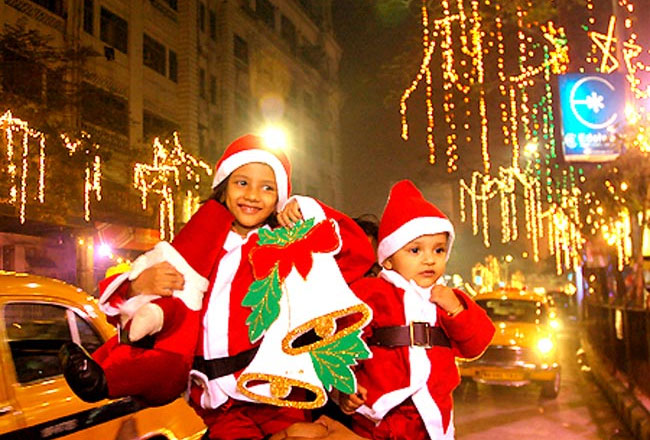
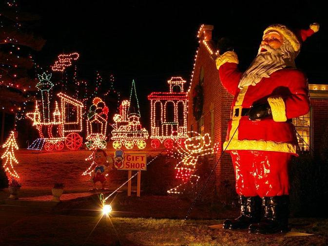
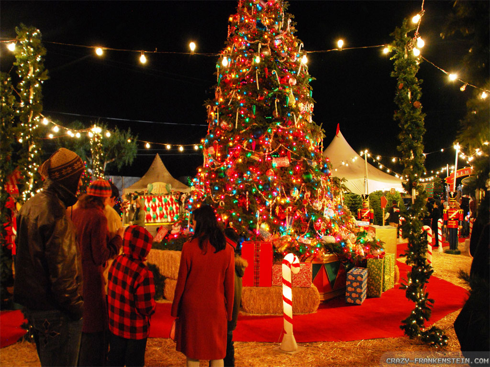

CHRISTMAS. The word "Christmas" means the mass of Christ and is the name for the Christian observance of the nativity of Jesus on 25 December. In liturgical importance, Christmas was originally in fourth place, following Easter, Pentecost, and Epiphany, yet in terms of popular observance it has become the most important feast day of the year and the basis for a vast commercial retail industry derived from it, even in countries like Japan and Korea, where Christianity is not the predominant religion.
the core of the old observance. The mass was often preceded by abstinence, a period called the vigil, that was then broken at midnight with a large meal in which the entire village or community participated. Such midnight feasting was practiced in many predominantly Roman Catholic countries, such as Poland and Spain, into the twenty-first century.